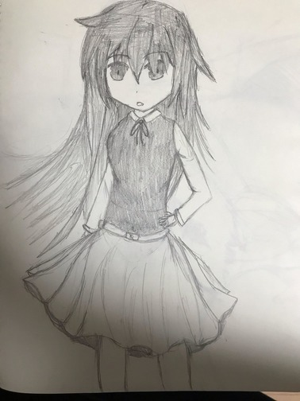
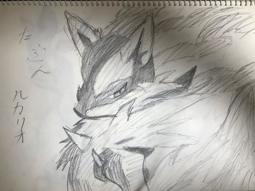
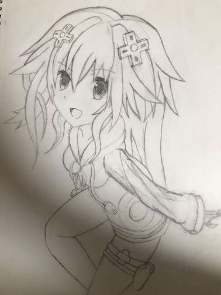

こんにちは、マークダウン記法を使いこなせなかった黒砂糖です。 「ラクガキ気分」なんてタイトルついていますが、今回は僕の「絵」の経歴（何時から絵を描き始めたのか、どの様に進化して行ったからなど）について書いていこうと思います。 つまり
黒歴史暴露会（。O。）
（他にネタがおもいつかなかった。）
他の人より内容が無いような記事になってしまうことをどうか許して欲しい。
では、
いつから絵を描くようになったの？
スケッチブックを使うようになったのは中学から、きっかけは美術の授業。デッサンやってから絵を描き始めたかなぁ～？正直あまり覚えてはいない。
この時はまだパソコンとか液タブを持ってなかったからアナログメインだった。当時の作品とかも残ってたらよかったけど、スケッチブックくらいしかのこってなかた。
↓ 当時の絵


こんな感じです、懐かしい。
時の流れは恐ろしいですね、もうすぐ成人しちゃう訳だ。今見ると色々と描けてないな、特に目のバランス。髪の毛描く時の癖が昔と変わってないなぁ～って改めて思う。あと、この時ってまだ色鉛筆使ってなかったんだって、自分で見返して思った。
高校生、部活では軽音楽でギター（ベース）をやっていたなと。もちろん絵も描いていたけど、そんなには描いてはいなかったかな。
↓ 当時の

このへんからポーズ資料とかを使い始めたんだったそうだった。このころはギターに時間を取られて隙を見つけては描くの繰り返しだったのがいい思いで。
今の画風も高校の時に決まったんだなぁ～（自分なりの考察）資料を使うと強い絵が描ける（個人差があります）、後世に語り継がれる事実だ。え？色がついていないって？色付きは昔の自分がどっかにやったよ（切り取られてた）。でも、服のしわとか細かいところはまだまだ未熟だなって思った。因みに、この時の資料は 『スーパーデフォルメポーズ集 基本ポーズ・アクション編』 Yielder/角丸つぶら 書 定価：本体 1905 円＋税 ていう本なので、気になった人は書店で探してみてね。今でも使っている優秀な本、というかお気に入り。
液タブとパソコンをそろえたのが今年の 1 月、今の私の画力がこれだ・・・
（既存絵で本当に申し訳ない） 個人的には華やかになったなぁ～ぐらいにしか思えない、何より悔しいのが（あれ？アナログの方が上手くない？）って思ってしまった自分がいることだ。考えてみればアナログで 6 年以上描いているのに対して、デジタルがもう少しで 1 年ってぐらいしか描いていないですよね。自分の中でまだデジタル絵が定着していない（使いこなしていないだけってのもある）のだろう。っと、こんな感じに（雑な）経歴晒しをして何が言いたいのか、それは
理想（目標）はあっても、
理想（ゴール）することは無いんじゃないかな？
ってことなんですよ。
自分の中にも理想（目標）があって、それに近づけるように毎回描いてはいます。そして、理想（目標）に手が届きそうになった時に、「あれ？なんか違うぞ」ってなるんですよ。ゴールド・エクスペリエンス・レクイエム。画力は確かに上げってはいるんですよ。でも画力が上がる度に、自分の中の理想（ゴール）は無意識に遠くなっているのですよ。描いているのに画力が上がっていないって思っている人、大丈夫ですちゃんと上がっています。目に見えていないだけです（ポケ ○ ンで言うなら努力値）。 今描いている絵も、X 年後の自分がみたら「うっわザッコ www」ってなりますから。雑な終わり方になってしまいますが、最後までこの記事を読んでくれた皆さん有難うございます。次回があるのならもっとまともな記事が書けるように転生してきます。
PS. 絵師は皆ド M